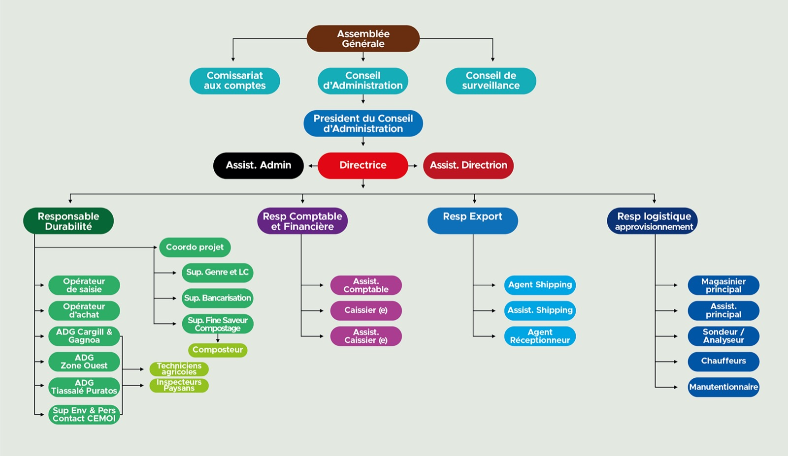
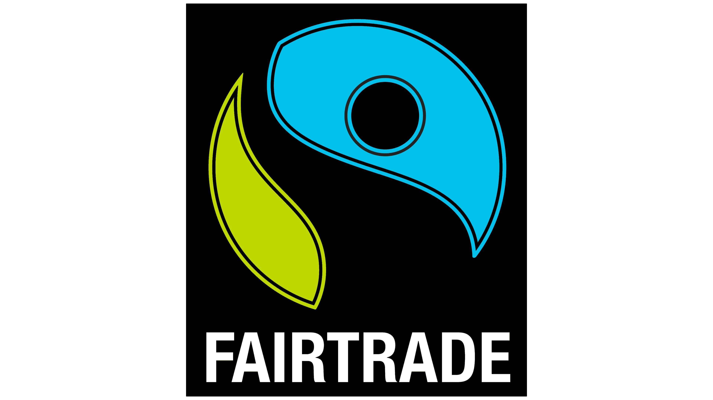
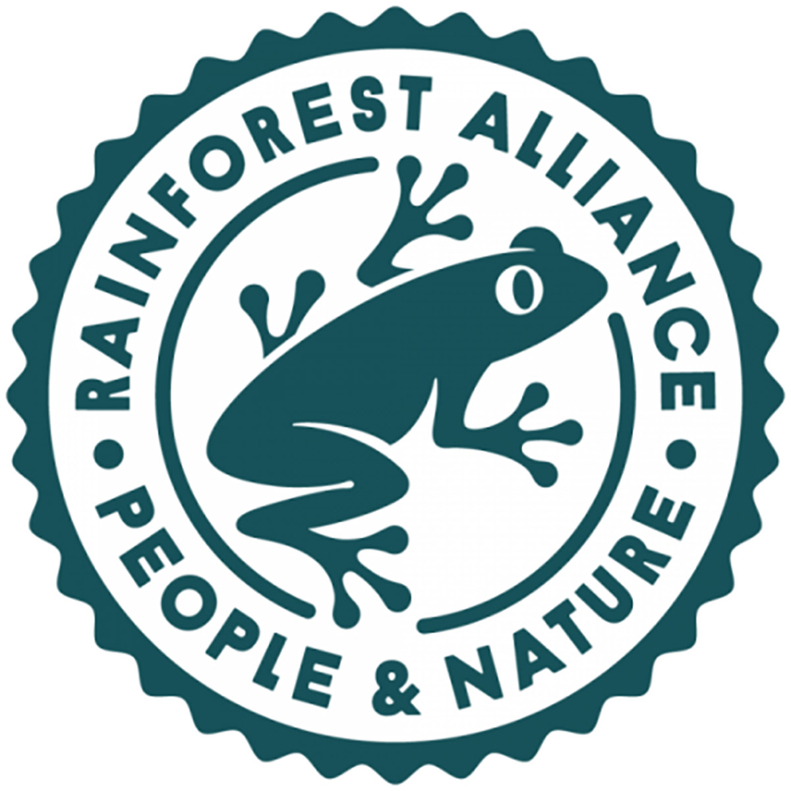

A Propos de Nous
Le Mot du Président
La Côte d'ivoire est depuis plusieurs années le leader mondial de la production de fève de cacao. Cette performance est le fruit du labeur de nos braves parents planteurs. Cependant ces derniers n'arrivent pas toujours à jouir pleinement de leurs efforts.
C'est pour palier à cela que nous jeunes cadres, fils et filles de producteurs avons décidé de nous mettre en ensemble afin de créer une société coopérative dénommée ECAKOOG COOP-CA (Entreprise Coopérative Agricole Koognagnan de Grogouya), avec pour mission de contribuer à l'amélioration des conditions de vie et de travail de nos parents planteurs en leurs offrant un meilleur cadre de commercialisation de leurs produits. Notre objectif est de bâtir une agriculture moderne, durable et respectueuse de l'environnement.
Le Président du Conseil d'Administration

ECAKOOG AUJOURD’HUI
ECAKOOG est une coopérative exportatrice de fèves de cacao, respectueuse des exigences de ses partenaires, de la norme Européenne et garant de la qualité des fèves de ses producteurs. Aujourd’hui, elle compte exactement 10 533 producteurs et 86 sections repartis entre le siège Lakota et sept (07) succursales.
Avec une capacité de production estimée à 20 000 tonnes pour une superficie de 22 076,81 ha, ECAKOOG promeut la production biologique, en fournissant à ses membres des intrants naturels et efficaces, tels que des engrais organiques et des biopesticides. Elle encourage également la diversification des cultures, en intégrant des arbres fruitiers, des plantes médicinales et des essences forestières dans ses parcelles de cacao, afin d’améliorer la fertilité des sols, la biodiversité et les revenus des producteurs.
NOTRE OBJECTIF
Collecter, Conditionner, Commercialiser, Exporter, et Transformer le produit de nos membres en différentes saveurs tout en contribuant à l'amélioration des revenus des cacaoculteurs et en valorisant une approche agroécologique dans la conduite de production de cacao biologique.
NOTRE PROGRAMME INTERNE DE DURABILITÉ BASE CINQ 5 PILIERS DE DÉVELOPPEMENT
- La production du cacao fine saveur
- La production de cacao biologique et d’intrants biologiques
- La bancarisation et la digitalisation des transactions financiers
- L’agroforesterie et la préservation de l’environnement par la restauration des paysages
- La promotion du genre et la lutte contre le travail des enfants
ECAKOOG est constituée de 4 organes statutaires dont une Assemblée Générale, un Conseil d’Administration de 9 membres, un Conseil de Surveillance de 3 membres et un Commissariat aux comptes. La coopérative est dirigée par une Directrice et a sous sa responsabilité un département comptable, export, logistique et durabilité pour un total de 85 employés.
Notre coopérative commercialise du cacao certifié à différents clients tels que CEMOI, CARGILL, SACO, SUCDEN et PURATOS localement.
Nos partenaires à l’export : CARGILL BV, FACTA INTERNATIONAL, COMOD TRADING, COCOASOURCE
Nos partenaires financiers sont les suivants : BACI, SHARED INTEREST, ABC Fund, FAIR CAPITAL, RABOBANK, ORANGE BANK, AFG
La collecte du cacao de nos membres, en provenance de nos 86 sections se fait grâce à nos propres camions de collecte et son évacuation vers les exportateurs s’effectue quand il y a besoin, avec des remorques louées à des tiers. Le tonnage commercialisé avec nos différents partenaires commerciaux varie en moyenne entre 5 000 et 7 000 tonnes.
ECAKOOG dispose de 05 remorques, 04 véhicules de liaison, 38 véhicules de collecte, et une soixantaine de motos.
Nos concurrents sont pour la plupart, les coopératives environnantes, et les
acheteurs.
Nos fournisseurs sont nos producteurs, nous travaillons également avec 2
coopératives sœurs (Coopaweb et Foundara).
Nos volumes ces 5 dernières campagnes :
- 2019-2020 : 5 296 559 kg
- 2020-2021 : 8 698 034 kg
- 2021-2022 : 5 095 485 kg
- 2022-2023 : 6 273 161 kg
- 2023-2024 : 5 340 056 kg


Structure et Fonctionnement
Notre gouvernance est le reflet de notre engagement envers la transparence et l'efficacité. L'Assemblée Générale est l'organe suprême de décision. Elle définit la politique générale de la coopérative.
Le Conseil d'Administration, composé de membres élus, veille à l'application des décisions de l'AG. La Direction Exécutive assure la gestion quotidienne et opérationnelle.
Pour être au plus proche de nos producteurs, nous avons décentralisé nos activités à travers nos 5 succursales, garantissant ainsi un suivi technique et un approvisionnement efficace.
Nos Chiffres Clés

Notre Parcours & Engagements
De la création à l'exportation, les grandes étapes de notre développement.
Février - Juillet 2012 : Naissance
Après le début des sensibilisations en février et la mise en place d'un registre de 521 producteurs, ECAKOOG voit officiellement le jour le 14 juillet 2012 à Grogouya (Lakota) avec un capital de 10 420 000 F CFA.
2012 - 2014 : Structuration
L'obtention de l'agrément en octobre 2012 marque nos débuts. En août 2013, nous devenons une société coopérative, suivie de notre immatriculation au RSC en janvier 2014.
Octobre 2015 : Reconnaissance
Volume record de 5 000 tonnes atteint. Nous sommes primés meilleure coopérative de la Délégation régionale de Divo (JNCC) et obtenons la certification UTZ pour nos bonnes pratiques.
2017 - 2019 : Diversification
Obtention du label Fairtrade en 2017. Lancement de la production du cacao fine saveur en 2019, année où nous devenons officiellement ECAKOOG COOP-CA.
2020 - 2021 : Exportation & Bio
Élaboration du programme interne de durabilité Koognanan cacao. Nous devenons une entreprise exportatrice en octobre 2020 et décrochons la certification Bio en mai 2021.
2022 - 2024 : Expansion Nationale
Création de 5 succursales en 2022, suivie de 2 supplémentaires (San-Pedro et Duékoué) en mai 2024, nous rapprochant toujours plus de nos producteurs.
Nos Certificats

